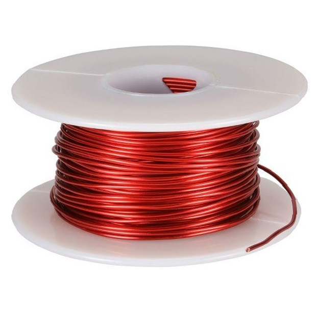

Проводниковые материалы и обмотка серводвигателя (сервомотора).
Медные эмалированные провода
Обмотки серводвигателей выполняются из медного провода. Провод изолируется стекловолокном или при помощи эмали. Также применяются медные ленты или шины. При производстве обмоток провода покрываются дополнительной изоляцией.
Эмалированные провода имеют преимущества перед изоляцией стекловолокном. Это меньшая толщина, более высокое значение теплопроводности и более надежная устойчивость к воздействию влаги. Но нужно учитывать меньшее значение стойкости к тепловым ударам, и уязвимость к воздействию растворителей. Эмалированные провода завоёвывают всё новые позиции и оттесняют стекловолокнистую изоляцию с лидирующих позиций.
Медные проводники, такие как шины и ленты, используют в обмотках добавочных полюсов и последовательных обмоток главных полюсов оборудования на постоянном токе, в обмотках возбуждения синхронных машин.
Для выводов электродвигателей используют кабель РКГМ ГОСТ 16036. Гибкий, его жилы из достаточно тонких медных проволок, имеющих эластичную изоляцию.
Электротехнические стали
Листы сердечников выполняются из тонколистовой электротехнической стали по ГОСТ 21427. Обозначение состоит из 4 цифр, которые описывают свойства стали:
- - класс по структурному состоянию;
- - содержание кремния;
- - по основной нормируемой характеристике;
- - порядковый номер типа стали;
Ранее сердечники, которые перемагничивались выполняли из изотропных горячекатаных электротехнических сталей. Те поставлялись листами унифицированных размеров.
Теперь данная сталь заменяется изотропной холоднокатаной электротехнической сталью. Она обладает большим значением магнитной проницаемости, малой разнотолщинностью, ниже удельные потери в случае перемагничивания и малой разноплоскостностью по отношению к горячекатаной стали. Поставляется холоднокатаная сталь в листах, которые нарезаются по унифицированным размерам и рулонами. На заводах возможна автоматическая штамповка.
При заказе следует ориентироваться на ширину листа от 500 до 1000 миллиметров, шаг разнится, поэтому лучше посмотреть ГОСТ 21427. Если объёмы и модельный ряд небольшие, то при изготовлении якоря машин и наружных диаметров сердечников лучше рассмотреть стандартную ширину рулонной стали. Также учесть минимальные допуски при штамповке.
Отношение потерь стали и суммы потерь в машине зависит от мощности электрооборудования. На практике это составляет в районе 0,25, если оборудование большей мощности, то нужно использовать сталь с меньшими удельными потерями.
После проката изотропную холоднокатаную сталь подвергают термической обработке, эта операция осуществляется в заводских условиях металлургических производств и позволяет стабилизировать магнитные свойства. Возможна поставка стали с нанесением электроизоляционного покрытия. Исключения из-за высокой пластичности см. ГОСТ.
Шихтованные сердечники полюсов, которые не подвергаются периодическому перемагничиванию выполняют из анизотропной холоднокатаной стали 3411.